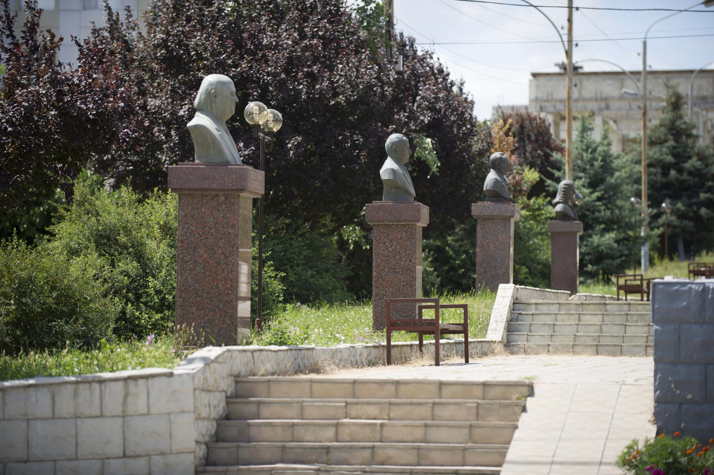
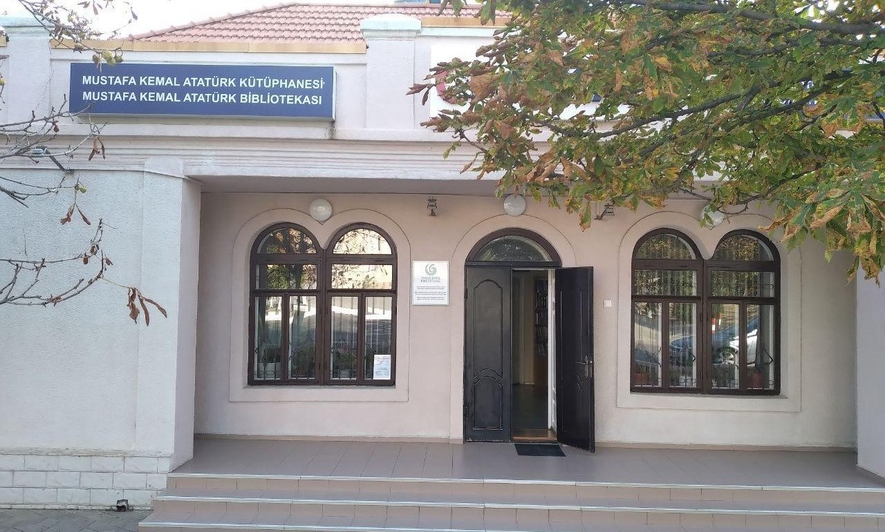
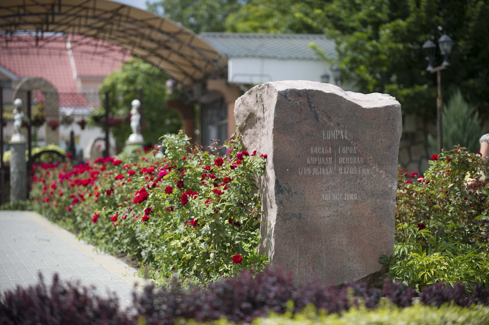

Главная
Комрат
Экскурсия
Контакты
Достопримечательности города Комрат

Аллея славы гагаузского народа, где установлены бюсты видным тюркским деятелям, ученым, гагаузоведам. По левую сторону расположены бюсты выдающихся политиков, по правую – деятелей культуры.
Собор Святого Иоана. Точной даты основания храма нет. Здание первого храма было деревянное, крепкое, на каменном фундаменте, с колокольней, устроенной на куполе. Сначала был построен храм, а позднее колокольня.
«Vinuri de Comrat» - первая и старейшая винодельня, расположенная на юге Молдовы, в Гагаузии, Комрат. Винодельня была основана в 1897 году.

Турецкая библиотека имени Ататюрка в Комрате открылась 26 июня 1998 года при содействии турецкого агентства ТИКА. На момент открытия книжный Фонд насчитывал 300 единиц, а сегодня он насчитывает около 8 тысяч.
Памятник ликвидаторам аварии на Чернобыльской АЭС. Памятник был открыт 03 мая 2019 году. Он расположен по улице Победа, чуть выше Памятника Освобождению города Комрат.

Памятник воздвигнут в честь основания города Комрат и расположен в центральном парке.


{kind=link}
{kind=link}
{kind=link}